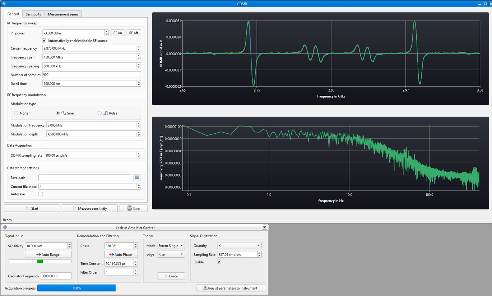

|
DynExp
Highly flexible laboratory automation for dynamically changing experiments.
|
|
DynExp
Highly flexible laboratory automation for dynamically changing experiments.
|
DynExp is an open-source tool for highly flexible laboratory automation for dynamically changing experiments based on modern C++.
Its idea is rather simple: DynExp implements hardware and devices typically employed in (physics) labs. It provides access to abstract and generalized instruments, which can use the hardware. In turn, the abstraction of instruments enables to write hardware-agnostic programs to control and automate experiments, so-called modules. This allows for greatest flexibility since the experiment modules do not depend on specific hardware. Instead, instruments can be assigned to modules without any programming at runtime.
-> Installation Quickstart
-> Documentation (Status:  )
)
-> Article published in SoftwareX at DOI. Please cite this article in your publication as follows if you use DynExp:
J. M. Bopp, T. Schröder, 'DynExp—Highly flexible laboratory automation for dynamically changing classical and quantum experiments', SoftwareX 28, 101964 (2024)
Amongst others, DynExp offers the following features:
DynExp's manages objects of three different types. HardwareAdapters provide access to physical hardware/devices connected to a computer. Instruments make use of (usually one) HardwareAdapter and abstract some of its functionality. E.g. an NIDAQ data acquisition device is managed by a respective HardwareAdapter. An NIDAQAnalogOut instrument provides access to one of its analog outputs. In turn, this hardware-specific instrument uses the NIDAQ HardwareAdapter. Furthermore, it is based on abstract hardware-agnostic AnalogOut, OutputPort, FunctionGenerator, and DataStreamInstrument meta instruments. Meta instruments declare some functionality, which derived hardware-specific instruments have to implement. Each hardware-specific instrument is based on one or more hardware-agnostic meta instruments and runs a task queue in its own thread. Experiments as programs on their own are implemented as Modules. Modules might possess their own user interface and run their own event queue in their respective own thread. Modules control hardware-specific instruments through hardware-agnostic meta instruments by polymorphism (a concept to call methods of derived classes through base class objects). This renders the modules hardware-agnostic themselves providing greatest flexibility. HardwareAdapters can be assigned and reassigned to (multiple) Instruments and Instruments can be assigned and reassigned to (multiple) Modules at runtime without any programming.
Currently supported hardware:
Available modules:
Currently supported virtual gRPC network instruments (clients) and modules (servers):
After cloning DynExp's repository (to a path not containing any space character!), run install_dependencies.ps1 under Windows or install_dependencies.sh under Linux in the folder src under the topmost folder of this repository to set up the package manager vcpkg and to use vcpkg to download and compile DynExp's dependencies (like Qt, see below for manual Qt installation). This might take several hours and consume about 90 GB disk space. After successful installation of all required packages with vcpkg, the contents of the folder ../vendor/vcpkg/buildtrees may be deleted to free some disk space again.
Compilation was tested using MSVC build tools version >= 17.10.0 on Windows 10 64-bit. Compile via the Visual Studio user interface opening the folder src/DynExpManager and setting CMakeLists.txt as the startup item. Do not forget to chose the desired build configuration (release, debug etc.).
Compilation was tested using gcc 13 on Ubuntu 22.04.3 LTS 64-bit.
On Ubuntu 22, likely the gcc compiler needs to be upgraded manually to version 13. This can be performed running
To compile, call
in the same folder where install_dependencies.sh is located and subsequently run ninja in folder ../out/build/linux-[debug|relwithdebinfo|release]-[default|user].
If "Fontconfig error: Cannot load default config file" occurs and if DynExp's font looks strange, set the environment variable:
If you wish to install Qt manually or to use an already installed Qt version, refer to https://www.qt.io/download-open-source and follow the instructions given there. Skip installing qtbase, qtserialport, qtcharts, qtdatavis3d, and qtsvg via vcpkg in that case (but make sure that they are available in your manual Qt installation). To skip the automatic installation of Qt libraries with vcpkg, execute the respective install_dependencies.[ps1|sh] script with the -skip-install-qt flag under Windows and with --skip-install-qt under Linux, respectively. Set the cmake variable CMAKE_PREFIX_PATH to the Qt installation directory by renaming the file CMakeUserPresets.json.default to CMakeUserPresets.json and adding the line
to the cacheVariables sections of the different configuration presets in CMakeUserPresets.json. Then, build the specific user configuration preset.
Set cmake options to compile with third-party libraries (for including respective hardware adapters and instruments) by firstly renaming the file CMakeUserPresets.json.default to CMakeUserPresets.json. Secondly, activate the thid-party components by adding lines like
to the cacheVariables sections of the different configuration presets in CMakeUserPresets.json. Then, build the specific user configuration preset. A list of all available options can be found at the beginning of the main CMakeLists.txt (refer to option declarations).
Alternatively, add command line options like -DUSE_SWABIANPULSESTREAMER=True to the call of cmake.
Do not forget to place the required third-party include and library files into the folders under src/DynExpManager/include and vendor, respectively. Refer to the README.txt files in the subfolders under src/DynExpManager/include for further instructions.
git pull in folder vendor/vcpkg under the topmost folder of this repository.\bootstrap-vcpkg.bat -disableMetrics (Windows) or ./bootstrap-vcpkg.sh -disableMetrics (Linux).\vcpkg upgrade --no-dry-run (Windows) or ./vcpkg upgrade --no-dry-run (Linux)Further Python modules can be installed by adding them as a ;-separated string to the Python_USER_REQUIRED_MODULES variable in the cacheVariables sections of the different configuration presets in CMakeUserPresets.json like
and by reconfiguring the project subsequently running cmake.
The folder examples located under the topmost folder of this repository contains example projects, which can be loaded with DynExp without any third-party hardware.
The project SignalDesigning.dynp demonstrates the SignalDesigner and SignalPlotter modules. With the signal designer, arbitrary signals can be designed and written to a data stream instrument. The signal plotter shows the samples stored in the data stream instrument's buffer. Signals designed with the SignalDesigner module can be saved to the project file. DynExp will automatically regenerate saved signals after loading the project, even without starting the SignalDesigner module again.

The project SignalToPosition.dynp loads data samples from a CSV file using the ArbitraryFunctionFromCSV module and stores them in a data stream instrument. Then, the Trajectory1D positioning module is used to interpret these samples as positions. The module moves a positioner stage to the positions stored in the data stream instrument's buffer.
To siumlate a positioner stage, the Physik Instrumente (PI) C-862 stage is used. This stage in reality communicates over a serial COM port. Due to DynExp's flexibility and for testing purposes, the stage is instead connected to a TCP socket to track its communication. To open a respective TCP socket the stage can communicate with on the localhost's port 1000, run the unix nc utility in a shell:
Then, load the project file and click the Force Trigger button in the Trajectory1D module. In the shell window running nc, move absolute commands MAxxx to move the positioner along the sinusoidal trajectory loaded from the CSV file will be displayed. The positioner instrument will show warnings since in this simulation, it will never receive the answers it expects from a real device.
The project StreamManipulation.dynp demonstrates the manipulation of data streams with the Python interpreter embedded by DynExp. After opening the project, DynExp will display two signal plotter windows. One of them shows the data contained in the input data streams In1 and In2. The other plotter shows the output data Out1 resulting from a multiplication of both input data streams. The multiplication is performed by the StreamManipulator module. It possesses an arbitrary number of input and output data stream instruments as well as a Python script to perform the data manipulation. In this example, the file stream_multiply.py is loaded from the examples directory. Its on_step function performs the multiplication and writes the resulting data to the output data stream. The function returns an object with the MinNextExecutionDelay and the MaxNextExecutionDelay properties. Together, these properties determine how often the Python script runs. It waits for at least MinNextExecutionDelay until every input data stream received new samples until it runs. It also runs if MaxNextExecutionDelay is exceeded.
The project PIDController.dynp simulates an object whose temperature is regulated with an attached PID-controlled heater. The object's temperature simulation as well as the PID controller are implemented in Python scripts operating on data stream instruments with two StreamManipulator modules. There are three data stream instruments: the first and second one each contain a single sample indicating the heater's heating power and the temerature setpoint, respectively. The third data stream instrument contains the measured (simulated) temperature over time. On the one hand, a stream manipulator employs the temperature_model.py script to simulate the object's temperature. The temperature changes according to the applied heating power with some latency. On the other hand, another stream manipulator utilizes the pid_controller.py script to determine the heating power according to the temperature setpoint with a PID controller. A SignalDesigner module enables to adjust the temperature setpoint.
Open two instances of DynExp and the server project file NetworkStreamServer.dynp in the first and the client project file NetworkStreamClient.dynp in the second DynExp instance. Using Linux, the server might need root permissions to open a TCP socket. The server uses the StreamManipulator module with the stream_randomize.py Python file to simulate measurement data. The 'measurement' data is generated by the Python script and written to a data stream instrument. Next, the network data stream instrument server streams the generated samples to the client over a TCP socket using gRPC. On the client site, a network data stream instrument client receives the data and a SignalPlotter module displays it.
Note that ethernet communication protocols defined with gRPC are independent of a certain programming language. It is possible to write e.g. a Python client to receive data from DynExp or to write data from the Python client to the DynExp server or the other way round.

For experimental control, qudi is a widespread Python-based solution. Since DynExp comes with an embedded Python interpreter, it can communicate with qudi. The project qudiReadStream.dynp uses a StreamManipulator module with the qudi_read_stream.py Python file to read data samples from a qudi instream module. The Python script connects to qudi (assuming it listening on localhost's port 65200) in the on_init function. Its on_step function reads data samples and populates the data stream instrument connected to the StreamManipulator module. A SignalPlotter module displays the received samples. When stopping the StreamManipulator module, the function on_exit in the Python file is called to close the ethernet connection to qudi.
DynExp's documentation can be found here.
Install Doxygen using
and run
in the topmost folder of this repository. Then, the documentation main page can be found in ./doc/html/index.html.
Every contribution to DynExp is highly welcome. To contribute, please fork this repository, commit your changes to your fork, and open a pull request to merge your changes into DynExp's main repository. If you have any further questions, do not hesitate to contact Julian.
To report bugs, please open an issue that includes details about the steps which have led to undesired behavior as well as hardware details of your system. Always include DynExp's log file DynExp.html, which is saved to the directory where the DynExp executable is located. Preferably, compile DynExp with the debug preset, reproduce the bug, and share the debug log file in your issue.
Extending DynExp is rather easy when creating new objects (such as instruments or modules) based on predefined template files DynExp comes with. To generate source files for a new object, run
in the folder src/DynExpManager/template. [Type] might be one of the following HardwareAdapter|MetaInstrument|Instrument|Module depending on the object which should be created. [Name] denotes the name of the object to be created. Next, adjust the parameters within the generated [Name].json. This file contains parameters extracted from the respective template. A subsequent call to
translates the respective template files into source files using the variables defined in [Name].json. Move the generated source files to the respective directory src/DynExpManager/[HardwareAdapters|MetaInstruments|Instruments|Modules]. The files are added to the project by inserting a line like
into the CMakeLists.txt file contained in the folder where the source files have been moved to. *.ui files do only exist for modules with user interfaces.
As a last step, append the newly created object to the respective libraray vector in main.cpp.in. To do so, firstly include the object's header file by adding
Then, add the line
to the type definition of either HardwareAdapterLib, InstrumentLib, or ModuleLib depending on the object's type.
To update the parameter system code-template from GitHub, run
in the repository's root directory.
Some further screenshots of different DynExp modules illustrate part of the implemented features.
